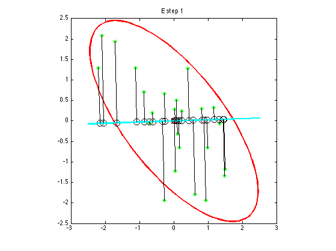
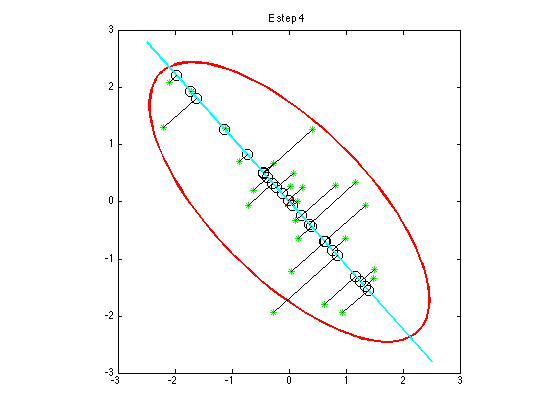
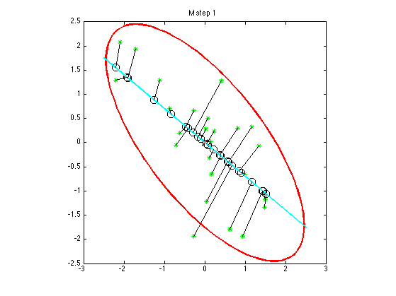
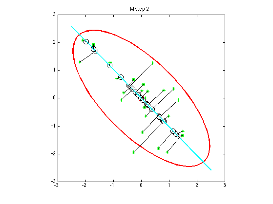
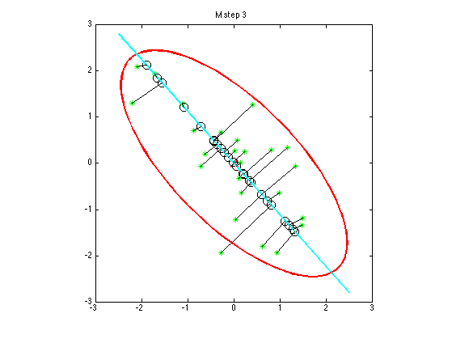
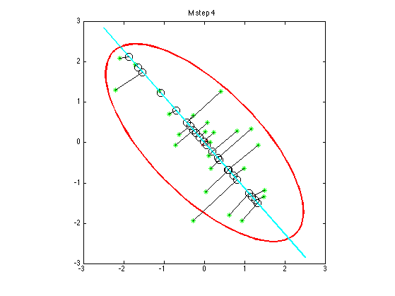

Contents
Illustrate EM for PCA
setSeed(10);
n = 25; d = 2;
mu0 = mvnrnd(eye(1,d),eye(d),1);
Sigma = [1,-0.7;-0.7,1];
X = mvnrnd(mu0,Sigma,n);
k = 1;
mu = mean(X);
X = X - repmat(mu, n, 1);
X = X';
[U,S,V] = svd(Sigma,0);
Wtrue = V(:,1:k);
[U,S,V] = svd(cov(X));
Wdata = V(:,1:k);
W = rand(size(X, 1), k);
converged = false;
negmseNew = -inf;
iter = 1;
while(~converged)
negmseOld = negmseNew;
E Step
Z = (W'*W) \ (W' * X);
Xrecon = W*Z;
figure;
Wortho = orth(W);
gaussPlot2d(zeros(1,d),Sigma); hold on;
plot(X(1,:),X(2,:),'g*');
plot(Xrecon(1,:),Xrecon(2,:),'ko','markersize',10);
xlim = get(gca,'XLim');
line(xlim,Wortho(2)/Wortho(1) * xlim,'color','c', 'linewidth', 2);
line([X(1,:);Xrecon(1,:)],[X(2,:);Xrecon(2,:)],'color','k');
axis square;
title(sprintf('E step %d', iter))
printPmtkFigure(sprintf('pcaEmStepByStepEstep%d',iter'));



M step
W = (X*Z')/(Z*Z');
negmseNew = -mean((Xrecon(:) - X(:)).^2)
converged = convergenceTest(negmseOld,negmseNew, 1e-2)
figure;
Wortho = orth(W);
Z = X'*Wortho;
[evecs, evals] = eig(Z'*Z/n);
[evals, perm] = sort(diag(evals), 'descend');
evecs = evecs(:, perm);
West = W*evecs;
Z = X'*West;
Xrecon = Z*West';
gaussPlot2d(zeros(1,d),Sigma); hold on;
plot(X(1,:),X(2,:),'g*');
plot(Xrecon(:,1),Xrecon(:,2),'ko','markersize',10);
xlim = get(gca,'XLim');
line(xlim,Wortho(2)/Wortho(1) * xlim,'color','c', 'linewidth', 2);
line([X(1,:);Xrecon(:,1)'],[X(2,:);Xrecon(:,2)'],'color','k');
axis square;
title(sprintf('M step %d', iter))
printPmtkFigure(sprintf('pcaEmStepByStepMstep%d',iter'));
iter = iter + 1
negmseNew =
-0.6415
converged =
0
iter =
2

negmseNew =
-0.2352
converged =
0
iter =
3

negmseNew =
-0.1943
converged =
0
iter =
4

negmseNew =
-0.1925
converged =
1
iter =
5

end